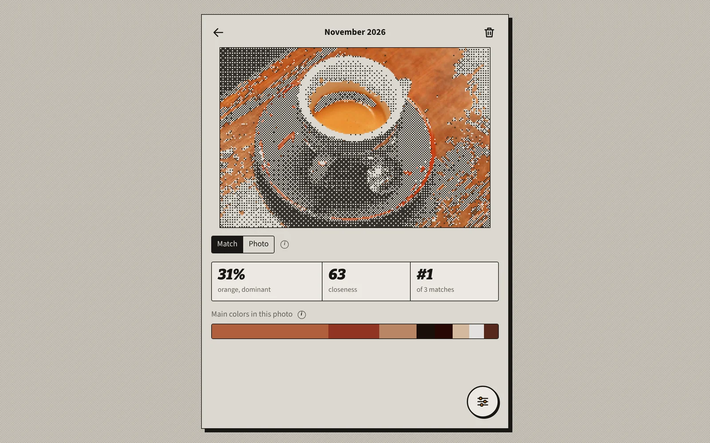

Playground
Satsuma
A photo album you search by color. Pick a color and see which of your photos have it. It runs entirely in the browser, so photos are read on your device and stay there.
Try it
What it does
- Search by color. Tap a color, or two, and photos re-rank by how much of that color they have and how close it is.
- See why. Open a photo and the matching pixels stay in color while the rest drops to a 1-bit dither. Tolerance sliders update it live.
- Pick from a photo. Tap anywhere on a photo to search for that exact color.
- Build sets. Select photos, save matches as an album, export a zip or a single image.
- Import Each photo is scaled down to 128px for analysis.
- Histogram Pixels go to OKLab and into buckets by lightness, chroma and hue.
- Match A bucket matches when it sits inside the tolerances around your color.
- Score Photos rank by how much of the color they have and how close it is.
How matching works
Each bucket keeps its pixel count and mean color. That happens once per photo, so a search is a lookup.
Hue, lightness and chroma each have their own tolerance, and each built-in color has its own defaults, because color names cover different ranges. Blue runs from navy to pale sky, while dark orange stops being orange and becomes brown. Near-grey pixels have no usable hue and never match a chromatic color.
Coverage is the share of the photo that matches. The score is sqrt(min(1, coverage / 30%)) x closeness, so past 30% only closeness separates photos. With two colors a photo needs both, and its coverage is the smaller of the two.
Warm lighting
The brightest near-white pixels estimate a warm color cast, which is cancelled before matching, so a white plate under yellow light still counts as white. Cool casts are left alone so a pale sky is never treated as white.
Limits
- Storage is IndexedDB in one browser on one device. No sync, no backup, and a browser can clear it.
- A web page only sees the photos you pick. It cannot read a whole camera roll.
- Originals are not kept, so exports are 900px copies.
- HEIC photos only work where the browser can decode them.